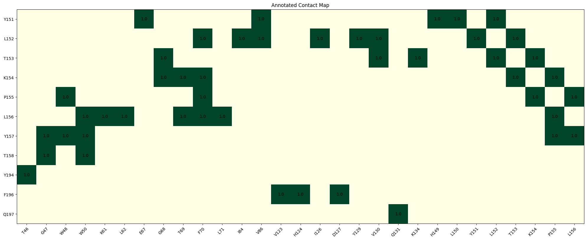

[1]:
import pandas as pd
from CoDIAC import contactMap as cm
from CoDIAC import PDBHelper
from CoDIAC import pTyrLigand_helpers as pTyr_helpers
DOMAIN-DOMAIN CONTACT INTERFACE EXTRACTION¶
STEP 1: Fetching data from PDB reference file for a PDB examined¶
[2]:
PATH = './Data/Adjacency_files/' #this is where you can find the adjacency files
ann_file = './Data/PDB_Reference/SH2_IPR000980_PDB_reference.csv' #this is the annotation file
PDB_ID = '4JGH' #SOCS family protein
ann = pd.read_csv(ann_file)
entities = PDBHelper.PDBEntitiesClass(ann, PDB_ID)
entity =1 #there's only one entity in this example
pdbClass = entities.pdb_dict[entity] #this holds information about the protein crystalized, such as domains
chain_A = cm.chainMap(PDB_ID, entity)
chain_A.construct(PATH)
[3]:
print('struct sequence:', chain_A.structSeq)
print('minimum residue number:', chain_A.return_min_residue())
print('length of residues in seq:', len(chain_A.resNums))
print('residue array size:', chain_A.arr.shape)
print('unmodelled residues list:',chain_A.unmodeled_list)
struct sequence: HMDPEFQAARLAKALRELGQTGWYWGSMTVNEAKEKLKEAPEGTFLIRDSSHSDYLLTISVKTSAGPTNLRIEYQDGKFRLDSIICVKSKLKQFDSVVHLIDYYVQMCKD----------GTVHLYLTKPLYTSAPSLQHLCRLTINKCTGAIWGLPLPTRLKDYLEEYKFQV
minimum residue number: 26
length of residues in seq: 173
residue array size: (173, 173)
unmodelled residues list: [136, 145]
[4]:
print(pdbClass.ref_seq_mutated)
print(pdbClass.ref_seq_positions[0])
print(len(pdbClass.ref_seq_mutated))
QAARLAKALRELGQTGWYWGSMTVNEAKEKLKEAPEGTFLIRDSSHSDYLLTISVKTSAGPTNLRIEYQDGKFRLDSIICVKSKLKQFDSVVHLIDYYVQMCKDKRTGPEAPRNGTVHLYLTKPLYTSAPSLQHLCRLTINKCTGAIWGLPLPTRLKDYLEEYKFQV
32
167
STEP2: Create an entity specific class to align structure to reference sequence positions¶
[5]:
chain_A_aligned = cm.translate_chainMap_to_RefSeq(chain_A, pdbClass) #class created to align structure to reference sequence positions
Deleting 6 amino acids
Adding 1 c-terminal gaps
[6]:
#These are the domains that are available in the structure for analysis
pdbClass.domains
[6]:
{0: {'SH2': [46, 156, 0, 0]}, 1: {'SOCS_box': [151, 197, 0, 0]}}
STEP 3: Identify domain boundaries¶
[7]:
ROI_1 = [46, 156] #SH2 domain
ROI_2 = [151, 197] #socsbox domain
fastaHeader = 'SH2|SOCS_box'
STEP 4: Generate fasta/feature files for jalview visualization¶
[11]:
chain_A_aligned.print_fasta_feature_files(ROI_1[0],0, ROI_1[1], -1,ROI_2[0], 0,ROI_2[1],-1, 'O14508|SOCS2|1|46|156', 'SOCS_box',
'./Data/Feature_Fasta_files/SH2_interdomain_4JGH', append=False, use_ref_seq_aligned=True)
[10]:
#another visualization of contacts between regions of interest
chain_A_aligned.generateAnnotatedHeatMap(ROI_2[0], ROI_2[1], ROI_1[0], ROI_1[1], remove_no_contacts=True)

LIGAND INTERFACE CONTACT EXTRACTION¶
STEP 1:Identity PTMS from PDB reference file for a specific PDB¶
[3]:
main = pd.read_csv(ann_file)
PDB_ID='3TL0'
for name, group in main.groupby('PDB_ID'):
for index, row in group.iterrows():
if name == PDB_ID:
modification_from_PDB = (row['modifications'])
if isinstance(row['modifications'],str): #PTM dictionary
transDict = PDBHelper.return_PTM_dict(modification_from_PDB) #dictionary with ptm information from PDB reference file
[4]:
transDict
[4]:
{4: 'PTR'}
STEP 2: Generate single dictionary of contact map for each entity in the structure¶
[5]:
lig_entity = 2
SH2_entity = 1
dict_of_lig = cm.return_single_chain_dict(main, PDB_ID, PATH, lig_entity)
dict_of_SH2 = cm.return_single_chain_dict(main, PDB_ID, PATH, SH2_entity)
3
Adding 1 n_term positions
Adding 2 c-terminal gaps
6
Adding 4 n_term positions
Adding 3 c-terminal gaps
[6]:
dict_of_lig
[6]:
{'entity': 2,
'PDB_ID': '3TL0',
'pdb_class': <CoDIAC.PDBHelper.PDBClass at 0x7fd119898310>,
'cm': <CoDIAC.contactMap.chainMap at 0x7fd10a013ee0>,
'cm_aligned': <CoDIAC.contactMap.chainMap at 0x7fd108c29e20>}
[7]:
cm_aligned = dict_of_lig['cm_aligned']
[8]:
cm_aligned.__dict__
[8]:
{'PDB_ID': '3TL0',
'entity': 2,
'aaRes_dict': {},
'arr': array([[0., 0., 0., 0., 0., 0., 0., 0., 0., 0.],
[0., 0., 1., 1., 0., 0., 0., 0., 0., 0.],
[0., 1., 0., 1., 0., 0., 0., 0., 0., 0.],
[0., 1., 1., 0., 1., 0., 0., 0., 0., 0.],
[0., 0., 0., 1., 0., 1., 1., 0., 0., 0.],
[0., 0., 0., 0., 1., 0., 1., 0., 0., 0.],
[0., 0., 0., 0., 1., 1., 0., 1., 0., 0.],
[0., 0., 0., 0., 0., 0., 1., 0., 0., 0.],
[0., 0., 0., 0., 0., 0., 0., 0., 0., 0.],
[0., 0., 0., 0., 0., 0., 0., 0., 0., 0.]]),
'transDict': {4: 'PTR'},
'structSeq': 'RLNYAQLWHR',
'resNums': [1, 2, 3, 4, 5, 6, 7, 8, 9, 10],
'adjacencyDict': {2: {3: 1, 4: 1},
3: {4: 1},
4: {5: 1},
5: {6: 1, 7: 1},
6: {7: 1},
7: {8: 1}},
'unmodeled_list': [1, 1, 8, 10],
'match': True,
'offset': 198,
'ERROR_CODE': 0,
'refseq': 'RLNYAQLWHR'}
STEP 3: Select the ligand length by specifying no of residues N and C terminal of PTM of interest (‘y’-pTyr)¶
[8]:
PTM='PTR'
for res in cm_aligned.transDict:
if res in cm_aligned.resNums:
if PTM in cm_aligned.transDict[res]:
res_start, res_end, aligned_str, tick_labels = pTyr_helpers.return_pos_of_interest(
cm_aligned.resNums, cm_aligned.structSeq, res, n_term_num=5, c_term_num=5, PTR_value = 'y')
[9]:
res_start, res_end, aligned_str, tick_labels
[9]:
(1,
9,
'--RLNyAQLWH',
['R-3', 'L-2', 'N-1', 'y0', 'A1', 'Q2', 'L3', 'W4', 'H5', 'R10'])
STEP 4: Generate contacts between two single entity dictionaries with contactmaps (domains and ligands on different entities)¶
[10]:
adjList, arr = cm.return_interChain_adj(PATH, dict_of_lig, dict_of_SH2) #outer dict keys for ligand residues - ligand to domain contacts
adjList_alt, arr_alt = cm.return_interChain_adj(PATH, dict_of_SH2, dict_of_lig) #outer dict keys for SH2 domain - domain to ligand contacts
[11]:
adjList
[11]:
{2: {14: 1, 17: 1},
4: {32: 1, 34: 1, 35: 1, 36: 1, 42: 1, 53: 1, 55: 1},
3: {52: 1, 53: 1},
5: {52: 1, 53: 1, 54: 1, 90: 1, 96: 1},
7: {54: 1, 65: 1, 88: 1, 89: 1, 90: 1, 96: 1},
8: {89: 1},
6: {90: 1, 91: 1}}
[12]:
#fetching start and end residue positions of domains and ligands
domains = dict_of_SH2['pdb_class'].domains
SH2_start = int(domains[0]['SH2'][0])
SH2_stop = int(domains[0]['SH2'][1])
arr_sub, list_aa_from_sub, list_to_aa_sub = cm.return_arr_subset_by_ROI(arr,
res_start, res_end, dict_of_lig['cm_aligned'].return_min_residue(),
SH2_start, SH2_stop, dict_of_SH2['cm_aligned'].return_min_residue())
[13]:
SH2_start, SH2_stop
[13]:
(4, 102)
STEP 5: Generate fasta/feature files for jalview visualization¶
[18]:
#SH2 domain-centric contacts
fasta_header = 'Q06124|PTPN11|1|4|102|lig_4'
PTM_file = './Data/Feature_Fasta_files/SH2_ligand_3TL0_test'
cm.print_fasta_feature_files(arr_alt, dict_of_SH2['cm_aligned'].refseq,
SH2_start,0, SH2_stop, -1,dict_of_SH2['cm_aligned'].return_min_residue(),
res_start,0, res_end, -1,dict_of_lig['cm_aligned'].return_min_residue(),
fasta_header,'pTyr', PTM_file, threshold=1, append=True)
[19]:
#pTyr ligand-centric contacts
SH2_file = './Data/Feature_Fasta_files/pTyr_3TL0_test'
cm.print_fasta_feature_files(arr, dict_of_lig['cm_aligned'].structSeq,
res_start, 0,res_end, -1,dict_of_lig['cm_aligned'].return_min_residue(),
SH2_start,0, SH2_stop, -1,dict_of_SH2['cm_aligned'].return_min_residue(),
fasta_header,'SH2', SH2_file, threshold=1, append=True )
[ ]: